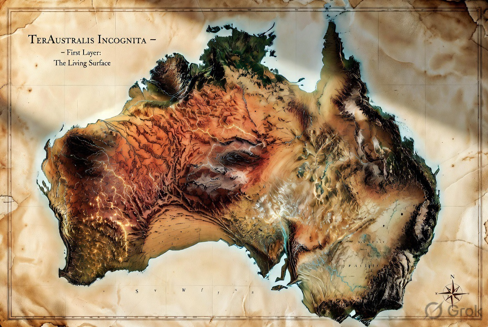

Southern Terrestrial Node — Pilbara / Port Hedland Axis

Australia occupies the position the classical maps once marked as necessary but unknown. In multiplanetary terms it supplies the southern terrestrial counterweight that current architecture largely lacks.
Binding, Not Aspirational
The Pilbara carries some of the oldest continuously-held cultural heritage on Earth, including sites, songlines, and sacred places under the custodianship of Traditional Owners and native title holders. No site selection, survey, construction, or testbed activity described in this brief proceeds over an identified sacred site or songline path without Free, Prior and Informed Consent from the relevant Traditional Owners, in advance of any physical works.
This is stated explicitly because the region's own recent history makes the cost of getting it wrong concrete: in May 2020, Rio Tinto destroyed the 46,000-year-old Juukan Gorge rock shelters in the Pilbara, sacred to the Puutu Kunti Kurrama and Pinikura peoples, while acting within the law as it then stood. The subsequent parliamentary inquiry found the existing legal minimum was not an adequate standard. This project holds itself to a higher one than legal compliance alone.
Practically, this means: independent Aboriginal cultural heritage survey before any site is finalised, Traditional Owner-controlled assessment processes (not proponent-controlled ones), and native title and heritage consultation run under the Aboriginal Heritage Act 1972 (WA) and the Native Title Act 1993 (Cth) as a floor, not a ceiling. This brief does not identify or describe any specific sacred site or songline — that knowledge belongs to its custodians, not to this document.
Port Hedland provides deep-water access and industrial logistics at heavy-industry scale. The Pilbara supplies minerals, energy potential, isolation, and terrain suitable for remote-operations and ISRU-related testing.
Together they form a practical axis for recovery, energy support, manufacturing, feedstock logistics, remote-ops training, and eventual propellant-related pathways.
This is not speculative greenfield. The industrial base exists. The question is orientation.
Pilbara and Arkaroola-class environments offer arid, remote, high-isolation conditions useful for surface operations logistics, high-latency procedure development, and continuity protocols before they are required on other worlds.
Testbed-Scale, Not Landscape-Scale
Mars terraforming techniques will need to be proven before they are relied upon. Pilbara/Arkaroola-class terrain offers a proving ground for that work — at plot scale, not continental scale.
Scoped test-plot applications include:
The value of this work is in its control and containment: small, instrumented plots that prove a technique, not a change to the surrounding landscape or ecology. This is deliberately distinct from any proposal to green or re-vegetate the outback at scale — that is a separate undertaking, with its own water-rights, ecological, and land-custodianship questions, and is out of scope here.
Feedstock and testbed claims above rest on published hydrology, not assumption:
One of the world's largest groundwater basins, roughly 1.7 million km² under much of arid and semi-arid Australia. Water sits in porous sedimentary rock under artesian pressure; recharge is slow and localised relative to the basin's scale — a resource to plan around, not an infinite tap.
One of the world's largest endorheic (inland-draining) basins, roughly 1.2 million km², spanning inland Queensland, South Australia, the Northern Territory, and western New South Wales. Flow is highly variable — long dry periods punctuated by episodic flooding.
Any water-dependent pathway (ISRU testbed use, industrial process water, feedstock support) needs engineering and allocation planning against these figures, not around them.
The Pilbara / Port Hedland axis is proposed as the primary terrestrial southern continuity and recovery node. It anchors physical redundancy, feedstock, energy, and testbed capacity on Earth so that the larger multiplanetary expansion rests on a more durable foundation.